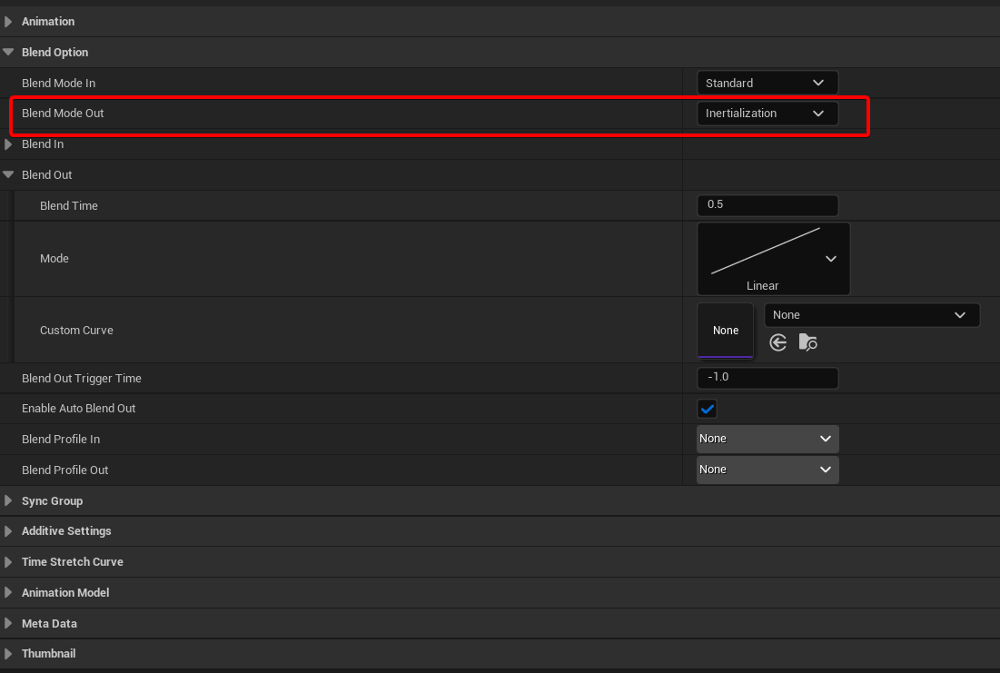

Abrupt pose changes are easy to notice in responsive gameplay. A montage may finish while the player is still holding movement input, yet the character briefly appears to stop before locomotion takes over. Increasing Blend Out time does not always solve the problem; it can make the transition feel delayed instead.
What inertialization changes
A conventional crossfade evaluates both source and destination animations during the transition. Inertialization captures the difference between the outgoing and incoming motion, then fades that offset as the destination animation continues. This preserves continuity while allowing the source animation to stop evaluating.
Montage setup

- Open the Animation Montage.
- Set its Blend Out mode to Inertialization.
- In the Animation Blueprint, place an Inertialization node after the Slot node used by the montage and before the final output pose.
- Tune the duration against the specific action and locomotion response.
Where it helps
- Returning from rolls, attacks, interactions, or traversal montages.
- Fast state changes such as idle-to-run or stand-to-crouch.
- Transitions where long crossfades feel sluggish.
- Animation graphs where avoiding evaluation of the outgoing source matters.
What it does not fix
Inertialization cannot correct incompatible root motion, poor contact poses, incorrect state timing, or gameplay movement that disagrees with the animation. Foot locking, motion warping, montage interruption rules, and Character Movement still need to be designed as a coherent system.
The node must appear downstream from the state machine, blend node, or Slot generating the inertialization request. Otherwise the request has nowhere to be processed.